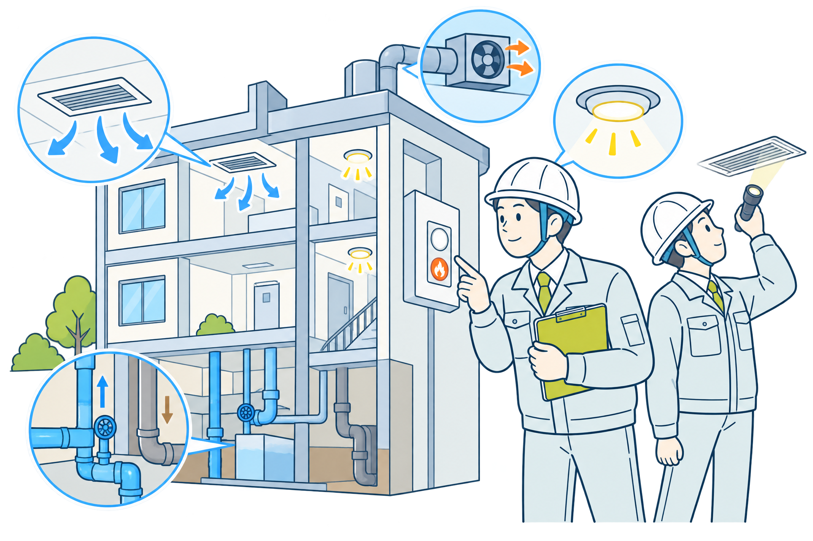
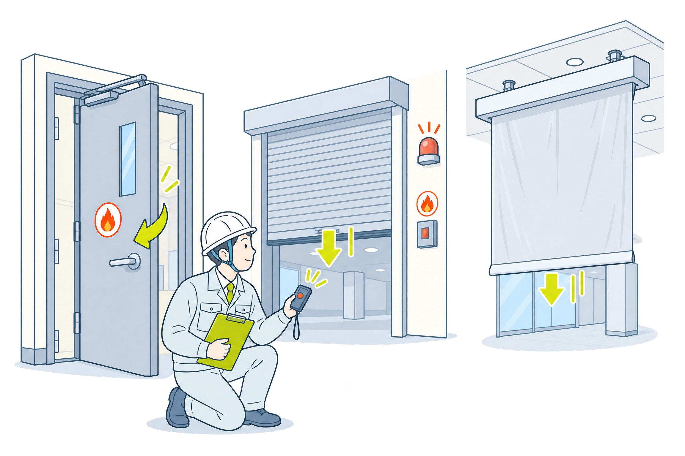
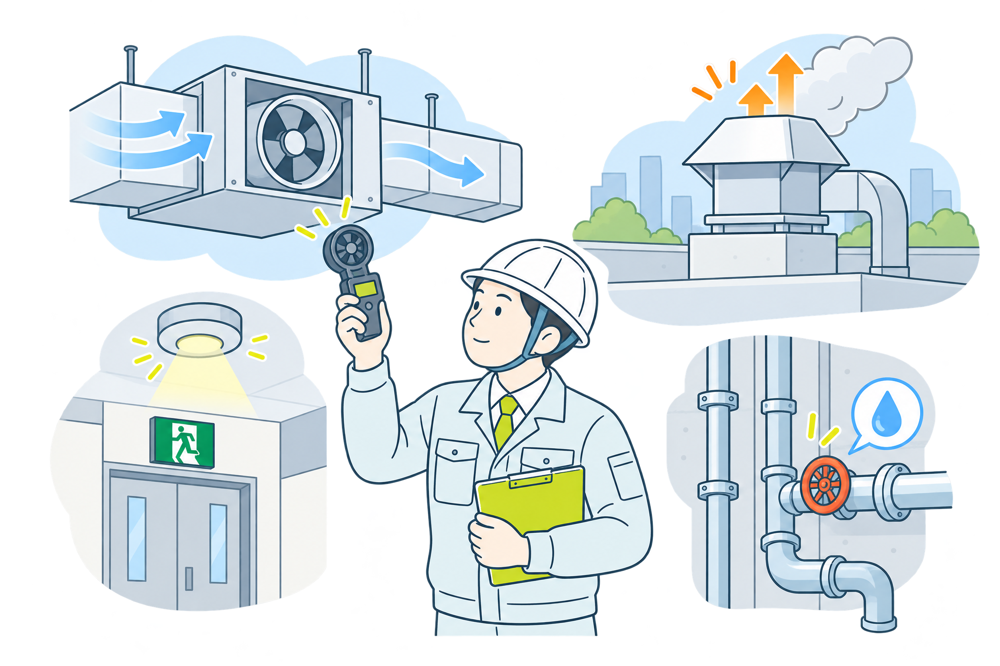
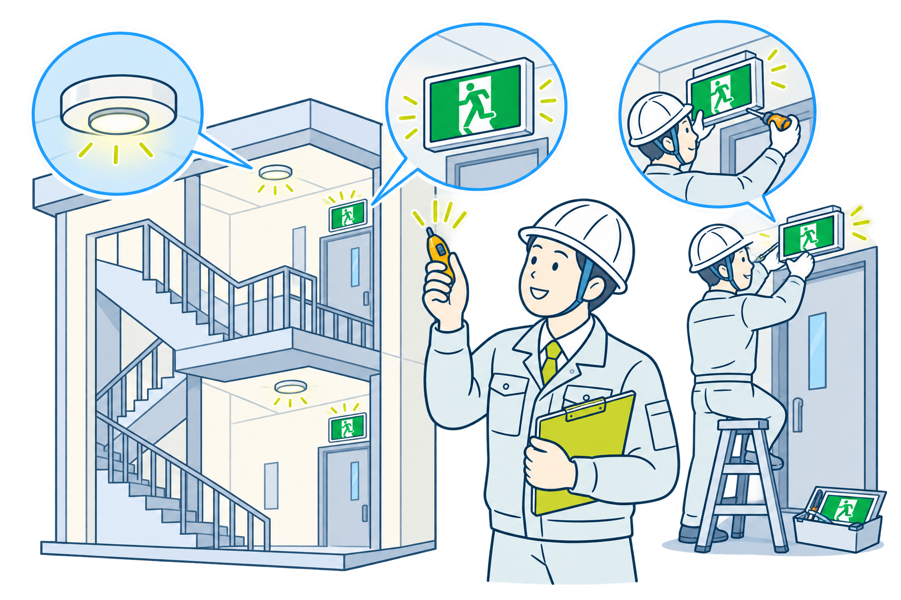

＼東京・横浜・川崎の建物オーナー・管理者さまへ／
建築基準法 第12条 で義務化された建物の法定点検（12条点検）
調査から是正・報告まで まるごと一括対応！ 有資格の技術者が、はじめての方にもやさしく対応します。
※オフィスビル・商業施設・マンション・学校・公共施設など幅広い建物に対応しています。
建物の管理者・オーナー様からよくいただくご相談です。
「特定行政庁から定期報告の
通知が届いたが何をすれば？」
役所から「定期報告のお知らせ」が届いたものの、対象の点検が何で、いつまでに・誰に頼めばいいのか分からず、書類を前に手が止まっていませんか。
「点検・調査・報告の
費用相場がわからない」
見積書を見ても項目が多く、金額が適正なのか判断できない。他社と比べる基準もなく、頼んでいいものか不安のまま先延ばしになっていませんか。
「指摘があったときの
是正工事まで任せたい」
調査で指摘が出ても、是正工事は別の業者を探すのは手間。調査から報告・工事までを一つの窓口でまとめてお願いしたいと感じていませんか。
その悩み、建物法定点検ナビがすべて解決します。
建築基準法第12条に基づく定期報告（12条点検）に幅広く対応します。

不特定多数が利用する建築物の敷地・構造・防火・避難施設などの劣化や損傷、不適切な改変がないかを調査します。
周期の目安：概ね3年ごと
防火扉・防火シャッター・耐火クロススクリーンなど、火災時に閉鎖して延焼を防ぐ設備が正常に作動するかを検査します。
周期の目安：概ね1年ごと
換気設備・排煙設備・非常用照明・給排水設備など、建物の安全に関わる建築設備の状態を検査します。
周期の目安：概ね1年ごと
点検・調査で見つかった指摘事項の是正から、非常用照明（非常灯）・誘導灯の新設・交換工事まで一貫して対応します。
是正工事まで対応※対象となる建物・報告周期は用途・規模や所轄の特定行政庁の指定によって異なります。詳しくは無料相談でご案内します。
まずは建物の状況を無料で確認。費用の目安を明確にご提示してから進めるので、はじめての方でも安心してご相談いただけます。
特殊建築物調査員・建築設備検査員・防火設備検査員・消防設備点検資格者・電気工事士などの有資格者が、専門的な視点で対応します。
調査・検査だけでなく、報告書の作成・提出、指摘事項の是正工事までワンストップ。窓口が一つで管理の手間を大きく減らせます。
東京都・横浜市・川崎市を中心に、神奈川県・関東エリアに幅広く対応。地域の特定行政庁の運用を踏まえてスムーズに進めます。
建物の用途・規模・階数によって費用は変動します。まずは無料お見積りで正確な金額をご確認ください。
目安 50,000円〜
建物の規模・用途により変動します
目安 30,000円〜
設備の数・種類により変動します
目安 40,000円〜
設備構成により変動します
※上記は一般的な目安金額です。正式な費用は現地調査のうえ、無料お見積りにてご提示します。
複数種別をまとめてご依頼いただくと、調整できる場合があります。
さまざまな種類の建物で定期報告・点検の実績があります。
オフィスビル
商業施設・店舗
マンション
学校・教育施設
公共施設
中小ビル
宿泊・民泊施設
医療・福祉施設
はじめての方でも迷わないよう、シンプルな5ステップでご案内します。
フォームまたはお電話でご連絡ください。建物の用途・規模・所在地などをお伺いします。
実際に建物を確認し、必要な点検内容と費用の目安を無料でご提示します。
内容にご納得いただいたうえでご契約。建物の稼働を妨げないよう日程を調整します。
有資格の技術者が現地で調査・検査を実施。指摘事項があれば是正のご提案も行います。
結果を報告書にまとめ、特定行政庁への提出をサポート。是正工事もそのまま対応可能です。
横浜市鶴見区を拠点に、東京都・横浜市・川崎市を中心とした神奈川県内、および関東エリア全域で建物の法定点検に対応しています。オフィスビルや商業施設、マンションなど、建物の種類を問わずご相談いただけます。エリア外の場合もまずはお気軽にお問い合わせください。
現地調査・お見積りは無料です。お気軽にお問い合わせください。